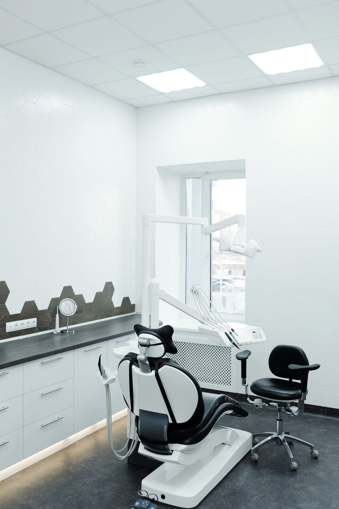

Лечение зубов
Кариес, пульпит и другие терапевтические задачи.
Цена уточняется
Выбрать направление ↗Услуга, специалист и пожелания ко времени — в одной заявке. Данные собираются автоматически, администратору остаётся согласовать приём с вами.

Это концепт. С вашими фото и правками будет ещё лучше
Направления с публичного сайта клиники. Стоимость лечения определяется после осмотра; актуальный прайс уточняется.
Кариес, пульпит и другие терапевтические задачи.
Осмотр и лечение молочных и постоянных зубов у детей.
Ультразвуковая чистка, Air Flow, полировка.
Брекеты, элайнеры и капы.
Удаление зубов и восстановление с помощью имплантов.
Металлокерамические, циркониевые и керамические коронки.
Информация об услугах — с публичного сайта клиники, проверено 11.11.2026. Это не план лечения. Метод, показания и итоговую стоимость определяет врач на консультации. Имеются противопоказания. Необходима консультация специалиста.
Реальные имена и специальности с сайта клиники. Без общего обещания о стаже: актуальные сведения и расписание подтверждает клиника.
Стоматолог-терапевт, стоматолог детский
Запросить приём ↗Стоматолог-терапевт, стоматолог общей практики
Запросить приём ↗Стоматолог детский
Запросить приём ↗Гигиенист
Запросить приём ↗Стоматолог-хирург, имплантолог
Запросить приём ↗Стоматолог-терапевт
Запросить приём ↗Стоматолог-хирург
Запросить приём ↗Стоматолог-ортодонт
Запросить приём ↗Стоматолог-ортопед
Запросить приём ↗Проверено по публичному сайту 11.11.2026. Состав команды, стаж, квалификация и часы приёма уточняются. Фото врачей не использованы: инициалы — графические обозначения, не портреты.
Без неподтверждённого общего обещания о стаже. Весь запрос собирается автоматически, а решение и подтверждение остаются за человеком.
От лечения зубов до ортодонтии — выбираете вашу задачу.
Список специалистов меняется под выбранную услугу.
Услуга, врач и желаемая дата в одном сообщении. Время подтверждает администратор.
Демонстрация сценария. Вводите только тестовые данные — отправки и сохранения нет.
Подберём врачей по выбранному направлению.
Покажем врачей нужного профиля из публичного состава клиники. Актуальность состава и расписание уточняются.
Это пожелание, а не свободный слот. Администратор согласует дату и время с врачом.
Пн–пт 09:00–19:00. Выходные — по предварительной записи. Наличие времени уточняется.
Это демонстрация. Ничего не отправлено. В рабочей версии администратор получит собранный запрос и свяжется с вами для подтверждения.
Подробности — на официальном сайте и по телефону. В демо не обещаем неподтверждённых условий.
В реальном сценарии администратор связывается с вами и согласует время. В демо показана только последовательность шагов: сообщения не отправляются, слоты не резервируются.
По контактам клиники: пн–пт 09:00–19:00, суббота и воскресенье — по предварительной записи. Конкретное время необходимо согласовать.
На сайте есть детская стоматология и врачи этого профиля. Возраст ребёнка, необходимые документы и условия приёма уточните по телефону.
На сайте указана бесплатная консультация, кроме консультации ортодонта. Действующие условия, стоимость ортодонтического приёма и ограничения уточняются в клинике.
В концепте нет общего обещания о стаже для всех. Специализации взяты из карточек клиники, а актуальные сведения о квалификации и стаже перед публикацией подтверждает сама клиника.
Томск, пер. Пихтовый, 7. Перед визитом согласуйте время с администратором.
Пн–пт 09:00–19:00.
Сб и вс — по предварительной записи.